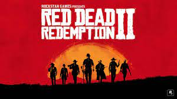
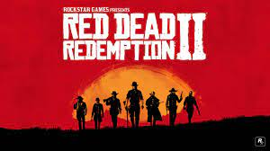
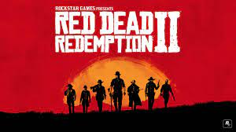

Red Dead Redemption 2 é um jogo eletrônico de ação-aventura desenvolvido e publicado pela Rockstar Games. É o terceiro título da série Red Dead e uma prequela de Red Dead Redemption, tendo sido lançado em outubro de 2018 para PlayStation 4 e Xbox One e em novembro de 2019 para Microsoft Windows e Google Stadia.
A história se passa em 1899 em uma representação ficcional do oeste, meio-oeste e sul dos Estados Unidos e acompanha o fora da lei Arthur Morgan, que precisa lidar com o declínio do Velho Oeste e sobreviver à perseguição de forças governamentais, gangues rivais e outros adversários.
